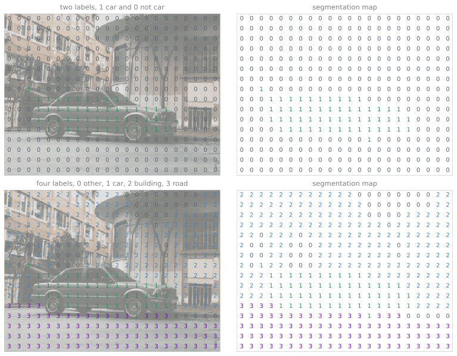
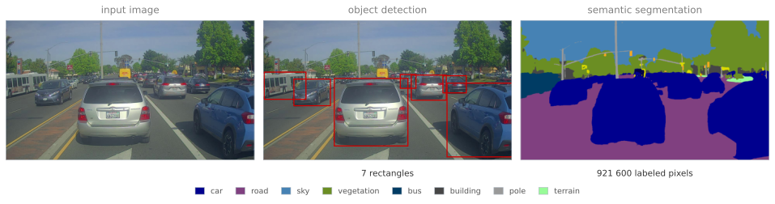
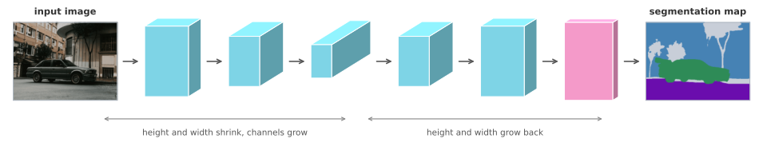
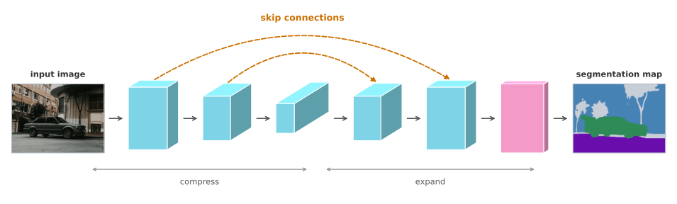
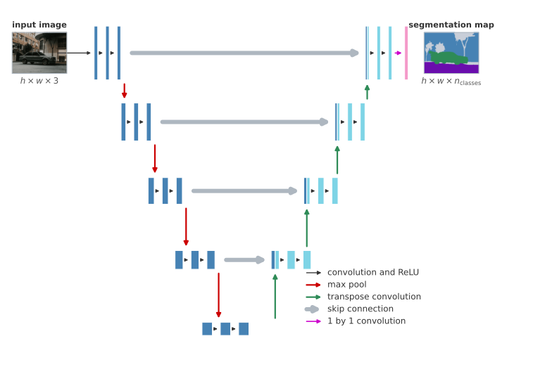

media/deep-learning/semantic-segmentation/make-labels.py.Aug 18, 2026
Three tasks sit on a ladder. Object recognition answers what is in a picture, such as whether it shows a cat. Object detection goes a step further and reports objects with rectangles, which is what Bounding Box Predictions with YOLO does, producing a box, a class, and a confidence for each object it finds. For a great many applications that is enough.
A box is a coarse answer, though. It says a car is somewhere inside this rectangle, and the rectangle inevitably contains road, sky, and pieces of other cars. Semantic segmentation asks the harder question, which is not where the object roughly is but which exact pixels belong to it. The answer is a label for every pixel in the image.
Start with the simplest version of the task, separating a car from everything else. Every pixel gets one of two labels, 1 if it is part of the car and 0 if it is not. The output is therefore not a class, and not four coordinates, but a grid of labels the same height and width as the input.
A richer version uses four labels. Keep 0 for anything outside the named scene classes, label the car 1, the buildings 2, and the road 3. The algorithm then has to color in the whole picture, deciding which label every pixel carries.
Those labels are easier to believe once they are drawn on the picture itself. Coarsen a scene into a grid of blocks, give every block the label its pixels mostly carry, and each block of the photograph ends up with a digit sitting on it. Lift the digits off the image and what is left standing on its own is the segmentation map, which is the thing the network is trained to produce.

media/deep-learning/semantic-segmentation/make-labels.py.The top row is the two label version, where a block is 1 if it belongs to the car and 0 if it does not. The bottom row is the richer version. Label 0 covers everything outside the three named scene classes, while the car, building, and road get labels of their own.
Blocks are used here only so that the digits stay large enough to read, since a real segmentation map carries one label per pixel rather than one per block. Set against what a detector has to say about a street, the difference in what is being asked for is immediate.

media/deep-learning/semantic-segmentation/make-labels.py.The middle panel is everything a detector has to say about this street. Seven rectangles, each holding a vehicle, and each also holding a strip of road, a slice of sky, and pieces of whatever is parked behind. The right panel is everything a segmentation network has to say about it, which is one label at each of the 921 600 pixels, so the boundary of a car follows the car and the road is marked wherever it is genuinely visible between them.
Those labels are predictions rather than human annotation, and the difference shows. The queue of vehicles near the center of the frame merges into a single region instead of separating into individual cars, because semantic segmentation labels a pixel with its class and has no notion of which car a pixel belongs to.
Formally, for an image of height \(h\) and width \(w\) the output has a prediction at all \(h \times w\) positions. With \(n_{\text{classes}}\) classes, the final layer produces a vector of \(n_{\text{classes}}\) numbers at each pixel, and taking the largest entry of that vector assigns the pixel to a class. An output of shape \(h \times w \times 3\) is therefore three numbers per pixel, not three pixels.
This is worth doing because several applications need exactly it, and a box would be useless for them.
A self driving car needs to know which pixels are drivable surface. Drawing a rectangle around the road is meaningless, since a road is not rectangular and the rectangle would include the pavement and the cars parked on it. Marking every pixel that can be driven over is the useful answer, and some self driving teams use segmentation for precisely that.
In medical imaging the same shift matters more. Given a chest X-ray, a diagnosis is useful, but an outline of exactly which pixels are lung, which are heart, and which are collarbone is more useful still, because it makes irregularities easier to spot and helps surgeons plan. Novikov et al. (2018) do exactly that, giving each structure its own color. Given a brain MRI, outlining a tumor by hand is slow and tedious work, and an algorithm that segments it automatically saves a radiologist a great deal of time and gives a surgical team something to plan against. That is the result reported by Dong et al. (2017), and the architecture behind it is the one built up in the rest of this page.
The shape of the network that produces such a map follows from the shape of the map itself. A recognition network passes an image forward through layer after layer, and the height and width of its activations shrink the whole way, until nothing is left but a vector of class scores. Taking the last few layers off removes that vector, and what remains is still far smaller than the input. The second half of the network therefore has to undo the shrinking, growing the height and width back up until there is a position for every pixel of the original image.

Everything in the first half is an ordinary ConvNet, of the kind the earlier pages built. The one operation in the second half that has not been covered yet is the one that makes a small grid of activations bigger.
1. How is semantic segmentation more detailed than object detection?
Object detection identifies an object and places a rectangle around it, so the answer is a handful of numbers per object. Semantic segmentation labels every pixel, so it can trace the exact boundary of an object, a road, or a building. A box says roughly where something is, while a segmentation says which pixels it is made of.
1. Why can the output of an ordinary classifier not serve as a segmentation map?
Because of its shape. A classifier reduces an image to a short vector, one number per class, and along the way the height and width of its activations shrink steadily. A segmentation map needs a prediction at every pixel position, so it has to be as tall and as wide as the input image. Getting there means the network has to grow the representation back up after shrinking it, which no ordinary classifier does.
1. A segmentation network for three classes outputs a volume of shape \(h \times w \times 3\). What sits at one position of that volume, and how does it become a label?
Three numbers, one per class, describing how strongly that pixel belongs to each. The label is the position of the largest of the three, which is an \(\arg\max\) over the class axis. Doing that at every one of the \(h \times w\) positions turns the volume into a single map of labels, which is what gets displayed as a colored overlay.
1. Which of these is semantic segmentation? (a) Locating an object of a certain class by drawing a bounding box around it. (b) Locating objects by predicting, for every pixel, which class it belongs to. (c) Locating objects of different classes by drawing bounding boxes around them.
(b). The answer is a class label at every pixel, so the shape of an object is traced rather than enclosed. (a) is localization and (c) is detection, and both stop at rectangles.
An ordinary convolution shrinks a representation, or at best keeps it the same size. Segmentation needs the opposite at some point, an operation that takes a small grid of activations and produces a larger one. The transpose convolution is that operation.
Its mechanics invert the usual convolution in one specific way. A normal convolution places the filter on the input, multiplies element by element, and sums to produce one output number. A transpose convolution places the filter on the output. It takes one input number, multiplies the entire filter by that single number, and writes the scaled filter into the output grid.
Because the input positions step across the output by the stride, and the filter is wider than the stride, neighboring placements land on overlapping regions. Where placements overlap, their values are added.
Carrying that through with actual numbers is the quickest way to be sure of it. Take a 2 by 2 input, a 3 by 3 filter, a stride of 2, and a padding of 1, and ask for a 4 by 4 output. The padding applies to the output rather than the input here, so the canvas being written into is 6 by 6, and the one cell border around it is discarded at the end.
The figure below is interactive. Press Play and the four scaled filters are written onto the canvas one at a time, so the totals in the cells grow as the blocks land rather than sitting there finished, and clicking an entry of the 2 by 2 input jumps straight to the step where that entry is placed. Hovering a cell of the canvas works backwards instead. It splits that cell into the contributions that landed on it, which is where the addition becomes visible, and lights up the input entry and the filter weight behind each contribution in the same color, so a result can be traced back to what produced it. Hovering an entry of the filter goes the other way, following that one weight forward to the single cell it writes into.
transposeExplorer = {
const input = [[2, 1], [3, 2]];
const filt = [[1, 2, 1], [2, 0, 1], [0, 2, 1]];
const N = input.length, K = filt.length, S = 2, P = 1, OUT = 4;
const CAN = OUT + 2 * P; // the padded canvas that is written into
const colors = ['#4682B4', '#2E8B57', '#CC7000', '#6A0DAD'];
const colorOf = k => colors[k];
// Every input value scales the whole filter, the scaled copies are written
// into the canvas S cells apart, and wherever two of them land on the same
// cell the values add. Each contribution is kept so a cell can be taken apart.
const parts = d3.range(CAN).map(() => d3.range(CAN).map(() => []));
for (let i = 0; i < N; i++)
for (let j = 0; j < N; j++)
for (let r = 0; r < K; r++)
for (let c = 0; c < K; c++) {
parts[S * i + r][S * j + c].push({k: i * N + j, v: input[i][j] * filt[r][c], r, c});
}
const isPad = (y, x) => y < P || x < P || y >= P + OUT || x >= P + OUT;
const cell = 46;
const inpW = N * cell, fltW = K * cell, canW = CAN * cell, canH = CAN * cell;
const fltX = inpW + 66, canX = fltX + fltW + 132;
const inpY = (canH - N * cell) / 2, fltY = (canH - K * cell) / 2;
const width = canX + canW;
const svg = d3.create("svg")
.attr("viewBox", [-12, -74, width + 24, canH + 158])
.attr("width", width + 24)
.attr("tabindex", 0)
.attr("role", "group")
.attr("aria-label", "transpose convolution of a 2 by 2 input with a 3 by 3 filter")
.style("max-width", "100%")
.style("height", "auto")
.style("outline", "none")
.style("font-family", "var(--site-font-body)");
svg.append("defs").append("marker")
.attr("id", "transposeArrowHead").attr("viewBox", "0 0 10 10")
.attr("refX", 9).attr("refY", 5)
.attr("markerWidth", 5).attr("markerHeight", 5)
.attr("orient", "auto")
.append("path").attr("d", "M 0 0 L 10 5 L 0 10 z").style("fill", "currentColor");
const gCells = svg.append("g");
const gTint = svg.append("g").attr("pointer-events", "none");
const gText = svg.append("g").attr("pointer-events", "none");
const gFrame = svg.append("g").attr("pointer-events", "none").style("fill", "none");
function drawGrid(mat, x0, y0) {
mat.forEach((row, i) => row.forEach((v, j) => {
const x = x0 + j * cell, y = y0 + i * cell;
gCells.append("rect")
.attr("x", x).attr("y", y).attr("width", cell).attr("height", cell)
.style("fill", "var(--site-surface)")
.style("stroke", "var(--site-surface-border)");
gText.append("text")
.attr("x", x + cell / 2).attr("y", y + cell / 2).attr("dy", "0.35em")
.attr("text-anchor", "middle").style("font-size", "15px")
.style("fill", "currentColor")
.text(v);
}));
}
drawGrid(input, 0, inpY);
drawGrid(filt, fltX, fltY);
// A canvas cell carries its running total, and the output cells that more
// than one placement has written to carry the sum behind that total as well,
// so no number ever has to be read as a contribution and a total at once.
// Both are filled in by render(), because both grow as blocks are placed.
const totalText = [], exprText = [];
for (let y = 0; y < CAN; y++) {
totalText.push([]);
exprText.push([]);
for (let x = 0; x < CAN; x++) {
const px = canX + x * cell, py = y * cell;
gCells.append("rect")
.attr("x", px).attr("y", py).attr("width", cell).attr("height", cell)
.style("fill", "var(--site-surface)")
.style("stroke", "var(--site-surface-border)");
totalText[y].push(gText.append("text")
.attr("x", px + cell / 2).attr("text-anchor", "middle")
.style("font-size", "15px").style("fill", "currentColor")
.style("opacity", isPad(y, x) ? 0.34 : 1));
exprText[y].push(gText.append("text")
.attr("x", px + cell / 2).attr("y", py + cell * 0.82)
.attr("text-anchor", "middle").style("font-size", "10.5px"));
}
}
// The canvas as it stands once the first `upto` blocks have been placed.
// Contributions were recorded in placement order, so this is a prefix.
function stateAfter(upto) {
const total = d3.range(CAN).map(() => new Array(CAN).fill(0));
const shown = d3.range(CAN).map(() => d3.range(CAN).map(() => []));
for (let y = 0; y < CAN; y++)
for (let x = 0; x < CAN; x++)
parts[y][x].forEach(part => {
if (part.k <= upto) {
total[y][x] += part.v;
shown[y][x].push(part);
}
});
return {total, shown};
}
let view = stateAfter(N * N - 1), termSpans = [];
function render() {
view = stateAfter(sel);
termSpans = [];
for (let y = 0; y < CAN; y++)
for (let x = 0; x < CAN; x++) {
const here = view.shown[y][x];
const split = here.length > 1 && !isPad(y, x);
totalText[y][x]
.attr("y", y * cell + (split ? cell * 0.42 : cell / 2))
.attr("dy", split ? 0 : "0.35em")
.text(view.total[y][x]);
const expr = exprText[y][x];
expr.selectAll("tspan").remove();
if (!split) continue;
here.forEach((part, n) => {
if (n) expr.append("tspan").text("+")
.style("fill", "currentColor").style("opacity", 0.4);
termSpans.push({node: expr.append("tspan").text(part.v), k: part.k, y, x});
});
}
placed.text(sel === N * N - 1 ? "all four blocks placed"
: `${sel + 1} of the 4 blocks placed`);
}
// the discarded border, shaded so that what survives is the inner 4 by 4
for (let y = 0; y < CAN; y++)
for (let x = 0; x < CAN; x++)
if (isPad(y, x))
gTint.append("rect")
.attr("x", canX + x * cell).attr("y", y * cell)
.attr("width", cell).attr("height", cell)
.style("fill", "currentColor").style("fill-opacity", 0.09);
gFrame.append("rect")
.attr("x", canX + P * cell).attr("y", P * cell)
.attr("width", OUT * cell).attr("height", OUT * cell)
.style("stroke", "currentColor").style("stroke-width", 2.4)
.style("stroke-dasharray", "7 4").style("opacity", 0.8);
// a faint wash on each input entry, so the four placements stay told apart
const inpTint = input.map((row, i) => row.map((v, j) => gCells.append("rect")
.attr("x", j * cell).attr("y", inpY + i * cell)
.attr("width", cell).attr("height", cell)
.style("fill", colorOf(i * N + j)).style("fill-opacity", 0.15)
.style("cursor", "pointer")));
const blockTint = gTint.append("rect")
.attr("width", K * cell).attr("height", K * cell).style("fill-opacity", 0.14);
const blockFrame = gFrame.append("rect")
.attr("width", K * cell).attr("height", K * cell).style("stroke-width", 3);
const inpFrame = gFrame.append("rect")
.attr("width", cell).attr("height", cell).style("stroke-width", 3);
// one filter weight against the single canvas cell it writes into
const pairTint = [0, 1].map(() => gTint.append("rect")
.attr("width", cell).attr("height", cell)
.style("fill-opacity", 0.34).style("display", "none"));
const pairFrame = [0, 1].map(() => gFrame.append("rect")
.attr("width", cell).attr("height", cell)
.style("stroke-width", 2.5).style("display", "none"));
const pairMark = [...pairTint, ...pairFrame];
// the placements that reached the focused cell, outlined on the canvas, each
// inset a little further so four frames around one cell stay separable
const contribFrame = d3.range(N * N).map(() => gFrame.append("rect")
.style("stroke-width", 2).style("display", "none"));
// where one canvas cell came from: the input entry that placed each
// contribution and the filter weight it used, marked in the placement's color
const srcMark = d3.range(N * N).map(() => ({
inTint: gTint.append("rect").attr("width", cell).attr("height", cell)
.style("fill-opacity", 0.34).style("display", "none"),
inFrame: gFrame.append("rect").attr("width", cell).attr("height", cell)
.style("stroke-width", 2.5).style("display", "none"),
fltTint: gTint.append("rect").attr("width", cell).attr("height", cell)
.style("fill-opacity", 0.34).style("display", "none"),
fltFrame: gFrame.append("rect").attr("width", cell).attr("height", cell)
.style("stroke-width", 2.5).style("display", "none")
}));
// the cell whose contributions are being taken apart underneath
const cellFrame = gFrame.append("rect")
.attr("width", cell).attr("height", cell)
.style("stroke", "currentColor").style("stroke-width", 3)
.style("display", "none");
const gHit = svg.append("g").style("fill", "transparent");
const hitRect = (x, y) => gHit.append("rect")
.attr("x", x).attr("y", y).attr("width", cell).attr("height", cell);
for (let r = 0; r < K; r++)
for (let c = 0; c < K; c++)
hitRect(fltX + c * cell, fltY + r * cell).style("cursor", "pointer")
.on("pointerenter", () => { stop(); setPair(r, c); })
.on("click", () => { stop(); setPair(r, c); })
.on("pointerleave", () => setPair(null));
for (let y = 0; y < CAN; y++)
for (let x = 0; x < CAN; x++)
hitRect(canX + x * cell, y * cell).style("cursor", "pointer")
.on("pointerenter", () => { stop(); breakDown(y, x); })
.on("click", () => { stop(); breakDown(y, x); });
const caption = (x, y, t, size, opacity) => svg.append("text")
.attr("x", x).attr("y", y).attr("text-anchor", "middle")
.style("font-size", `${size}px`).style("fill", "currentColor")
.style("opacity", opacity).text(t);
caption(inpW / 2, -14, "2 x 2 input", 14, 0.6);
caption(fltX + fltW / 2, -14, "3 x 3 filter", 14, 0.6);
caption(canX + canW / 2, -14, "6 x 6 canvas, padding 1", 14, 0.6);
const placed = caption(canX + canW / 2, canH + 26, "", 13, 0.95);
caption(canX + canW / 2, canH + 50, "the dashed 4 x 4 is the output", 13, 0.75);
caption(canX + canW / 2, canH + 70, "the shaded border is thrown away", 13, 0.75);
caption((inpW + fltX) / 2, canH / 2 + 8, "x", 24, 1);
const arrowX0 = fltX + fltW + 16, arrowX1 = canX - 16;
caption((arrowX0 + arrowX1) / 2, canH / 2 - 16, "place at stride 2", 13, 0.75);
caption((arrowX0 + arrowX1) / 2, canH / 2 + 30, "and add", 13, 0.75);
svg.append("line")
.attr("x1", arrowX0).attr("y1", canH / 2).attr("x2", arrowX1).attr("y2", canH / 2)
.style("stroke", "currentColor").style("stroke-width", 1.3).style("opacity", 0.7)
.attr("marker-end", "url(#transposeArrowHead)");
const styles = html`<style>
.tconv-explorer { margin: 1em 0; }
.tconv-explorer .tconv-bar { display: flex; align-items: center; gap: 1rem;
flex-wrap: wrap; margin-bottom: 0.5rem; }
.tconv-explorer .tconv-hint { font-size: 0.9rem; opacity: 0.75; }
.tconv-explorer .tconv-play { border: 2px solid var(--site-accent);
background: transparent; color: var(--site-accent); border-radius: 6px;
padding: 4px 18px; font-weight: 600; cursor: pointer; }
.tconv-explorer .tconv-play:hover { background: var(--site-accent);
color: var(--site-accent-contrast); }
.tconv-explorer .tconv-play:focus-visible { outline: none;
box-shadow: 0 0 0 3px var(--site-accent-ring); }
.tconv-explorer .tconv-where { font-size: 0.85rem; opacity: 0.7;
margin-top: 0.7rem; min-height: 2.6em; }
.tconv-explorer .tconv-eq { font-size: 1rem; font-weight: 600; line-height: 1.6;
min-height: 1.6em; }
.tconv-explorer .tconv-term { padding: 0 3px; border-radius: 3px; cursor: pointer;
background-color: var(--tconv-term-tint, transparent); }
.tconv-explorer .tconv-pair { font-size: 0.85rem; opacity: 0.75;
min-height: 1.5em; margin-top: 0.2rem; }
</style>`;
const button = html`<button class="tconv-play" type="button">Play</button>`;
const where = html`<div class="tconv-where"></div>`;
const equation = html`<div class="tconv-eq"></div>`;
const pairNote = html`<div class="tconv-pair"></div>`;
let sel = 0, focus = null, timer = null;
// Placing a filter and taking a cell apart are two ways of reading the same
// canvas, so only one of them is ever drawn. Whichever the reader touched
// last owns the highlighting, and the other one clears itself away.
function lightTerms(on) {
termSpans.forEach(t => t.node
.style("fill", on(t) ? colorOf(t.k) : "currentColor")
.style("font-weight", on(t) ? 700 : 400)
.style("opacity", on(t) ? 1 : 0.4));
}
function clearCell() {
focus = null;
cellFrame.style("display", "none");
contribFrame.forEach(f => f.style("display", "none"));
srcMark.forEach(m => Object.values(m).forEach(mark => mark.style("display", "none")));
equation.textContent = "";
}
function clearPlacement() {
[blockTint, blockFrame, inpFrame].forEach(m => m.style("display", "none"));
inpTint.forEach(row => row.forEach(t => t.style("fill-opacity", 0.15)));
}
// one input value scaling the whole filter, and the block it writes into
function select(k) {
sel = k;
setPair(null);
clearCell();
render();
const i = Math.floor(k / N), j = k % N, col = colorOf(k), v = input[i][j];
const y0 = S * i, x0 = S * j;
blockTint.attr("x", canX + x0 * cell).attr("y", y0 * cell)
.style("fill", col).style("display", null);
blockFrame.attr("x", canX + x0 * cell).attr("y", y0 * cell)
.style("stroke", col).style("display", null);
inpFrame.attr("x", j * cell).attr("y", inpY + i * cell)
.style("stroke", col).style("display", null);
inpTint.forEach((row, a) => row.forEach((t, b) =>
t.style("fill-opacity", a === i && b === j ? 0.38 : 0.15)));
lightTerms(t => t.k === k);
const scaled = filt.map(row => row.map(f => v * f));
where.textContent =
`input row ${i + 1}, column ${j + 1} holds ${v}, so the whole filter is ` +
`multiplied by ${v}, giving ${scaled.map(r => r.join(" ")).join(" / ")}, ` +
`and that block is written into canvas rows ${y0 + 1} to ${y0 + K}, ` +
`columns ${x0 + 1} to ${x0 + K}`;
}
// one canvas cell taken apart into everything that landed on it
function breakDown(y, x) {
setPair(null);
clearPlacement();
focus = [y, x];
cellFrame.attr("x", canX + x * cell).attr("y", y * cell).style("display", null);
contribFrame.forEach(f => f.style("display", "none"));
srcMark.forEach(m => Object.values(m).forEach(mark => mark.style("display", "none")));
const here = view.shown[y][x];
here.forEach((part, n) => {
const col = colorOf(part.k), inset = 1.5 * n;
const i = Math.floor(part.k / N), j = part.k % N;
contribFrame[n]
.attr("x", canX + S * j * cell + inset).attr("y", S * i * cell + inset)
.attr("width", K * cell - 2 * inset).attr("height", K * cell - 2 * inset)
.style("stroke", col).style("display", null);
const m = srcMark[n];
m.inTint.attr("x", j * cell).attr("y", inpY + i * cell)
.style("fill", col).style("display", null);
m.inFrame.attr("x", j * cell).attr("y", inpY + i * cell)
.style("stroke", col).style("display", null);
m.fltTint.attr("x", fltX + part.c * cell).attr("y", fltY + part.r * cell)
.style("fill", col).style("display", null);
m.fltFrame.attr("x", fltX + part.c * cell).attr("y", fltY + part.r * cell)
.style("stroke", col).style("display", null);
});
lightTerms(t => t.y === y && t.x === x);
equation.textContent = "";
if (here.length === 0) {
equation.append(`canvas row ${y + 1}, column ${x + 1} has nothing written to it `
+ `yet, so it stays 0`);
} else {
here.forEach((part, n) => {
if (n > 0) equation.append(" + ");
const span = document.createElement("span");
span.className = "tconv-term";
span.textContent = `${part.v}`;
span.style.color = colorOf(part.k);
span.onpointerenter = () => { stop(); select(part.k); };
span.onclick = () => { stop(); select(part.k); };
equation.append(span);
});
// a single contribution needs no sum written after it
if (here.length > 1) equation.append(` = ${view.total[y][x]}`);
}
const wrote = here.length === 1 ? "one placement wrote to it"
: `${here.length} placements wrote to it`;
where.textContent = isPad(y, x)
? `canvas row ${y + 1}, column ${x + 1} sits in the padding border, so whatever `
+ `lands there is thrown away`
: `canvas row ${y + 1}, column ${x + 1} survives as output row ${y - P + 1}, `
+ `column ${x - P + 1}, and ${wrote}`;
}
// link one filter weight to the single canvas cell it writes into
function setPair(r, c) {
if (r === null) {
pairMark.forEach(m => m.style("display", "none"));
pairNote.textContent = "";
return;
}
const i = Math.floor(sel / N), j = sel % N, col = colorOf(sel), v = input[i][j];
const y = S * i + r, x = S * j + c;
const spots = [[fltX + c * cell, fltY + r * cell], [canX + x * cell, y * cell]];
pairTint.forEach((m, n) => m.attr("x", spots[n][0]).attr("y", spots[n][1])
.style("fill", col).style("display", null));
pairFrame.forEach((m, n) => m.attr("x", spots[n][0]).attr("y", spots[n][1])
.style("stroke", col).style("display", null));
pairNote.textContent =
`filter row ${r + 1}, column ${c + 1} holds ${filt[r][c]}, and scaled by ${v} ` +
`it adds ${v * filt[r][c]} to canvas row ${y + 1}, column ${x + 1}` +
(isPad(y, x) ? ", which is padding and is discarded" : "");
}
function stop() {
if (timer) { clearInterval(timer); timer = null; button.textContent = "Play"; }
}
button.onclick = () => {
if (timer) return stop();
button.textContent = "Pause";
timer = setInterval(() => select((sel + 1) % (N * N)), 1300);
};
inpTint.forEach((row, i) => row.forEach((t, j) => t
.on("pointerenter", () => { stop(); select(i * N + j); })
.on("click", () => { stop(); select(i * N + j); })));
const steps = {ArrowRight: 1, ArrowLeft: -1, ArrowDown: N, ArrowUp: -N};
svg.on("keydown", event => {
const d = steps[event.key];
if (d === undefined) return;
event.preventDefault();
stop();
select((sel + d + N * N) % (N * N));
});
invalidation.then(stop);
select(N * N - 1);
return html`<div class="tconv-explorer svg-theme-aware">${styles}
<div class="tconv-bar">${button}
<span class="tconv-hint">Press Play to write the four scaled filters onto the canvas
one at a time and watch the totals grow, or click an input entry to jump straight
to that step. Hover a cell of the canvas to split it into the contributions that
landed on it and light up the input entry and filter weight behind each one, or
hover a filter entry to follow that one weight forward to the cell it writes
into.</span>
</div>
${svg.node()}
${where}
${equation}
${pairNote}
</div>`;
}Follow one number through. The input entry in the top left is 2, so the whole filter is multiplied by 2, giving \([[2, 4, 2], [4, 0, 2], [0, 4, 2]]\), and that 3 by 3 block is written into the top left corner of the canvas. Its first row and its first column fall in the padding, so five of its nine values are thrown away and only four survive. The next input entry along is 1, so the filter is multiplied by 1 and written two columns further across, because the stride is 2. Since the block is 3 wide and the step is only 2, its left column lands on top of the previous block’s right column, and those two values are added rather than one replacing the other. Repeating for the remaining two entries fills the rest of the canvas.
The 4 by 4 left inside the dashed rectangle is the answer.
\[ \begin{bmatrix} 0 & 4 & 0 & 1 \\ 10 & 7 & 6 & 3 \\ 0 & 7 & 0 & 2 \\ 6 & 3 & 4 & 2 \end{bmatrix} \]
Seven of the sixteen output cells receive more than one contribution, and they form a cross through the second row and the second column, which is where the four placements meet. The busiest is the cell holding 7, which takes 2 from the block scaled by 2, 0 from the block scaled by 1, 3 from the block scaled by 3, and 2 from the block scaled by 2 again, and \(2 + 0 + 3 + 2 = 7\).
The padding above is stripped symmetrically, one cell from every side of the 6 by 6 canvas. A framework does not have to place it that way. Passing this same input, filter, and stride to tf.nn.conv2d_transpose with padding='SAME' and a 4 by 4 output shape returns the top left 4 by 4 of the same canvas, which is
\[ \begin{bmatrix} 2 & 4 & 3 & 2 \\ 4 & 0 & 4 & 0 \\ 3 & 10 & 7 & 6 \\ 6 & 0 & 7 & 0 \end{bmatrix} \]
rather than the grid inside the dashed rectangle. The total padding TensorFlow needs here is a single cell, and it puts that cell on the bottom and the right instead of splitting it between the two sides. The canvas is identical, the operation is identical, and only the choice of which 4 by 4 to keep differs.
One question is worth answering before moving on, which is why bother with this rather than simply scaling the image up. The filter values here are learned, like any other convolutional filter. A fixed rule for enlargement, such as repeating each pixel or interpolating between them, treats every region the same way. A learned filter can decide how a compact representation should be spread into a larger one, which is what makes the operation useful inside a network that has to reconstruct fine detail.
1. What happens when two scaled copies of the filter write to the same output position?
The contributions are added. A transpose convolution does not choose between placements or overwrite one with another, it accumulates every contribution landing on a position. In the worked example seven of the sixteen output cells receive more than one copy, and the cell holding 7 receives four of them, \(2 + 0 + 3 + 2\).
1. Why does a stride of 2 with a 3 by 3 filter guarantee overlap?
Because the filter is wider than the step. Each placement covers three columns of the output, while consecutive placements start only two columns apart, so the third column of one placement lands on the first column of the next. Overlap disappears only when the stride is at least as large as the filter, which is also when the operation stops blending neighboring contributions.
1. A transpose convolution has padding 1 and stride 2. The input is \(\begin{bmatrix} 1 & 3 \\ 2 & 4 \end{bmatrix}\) and the filter is \(\begin{bmatrix} 1 & 0 & 1 \\ 0 & 0 & 0 \\ 1 & 0 & 1 \end{bmatrix}\). Fill in \(X\), \(Y\), and \(Z\) in the 4 by 4 output.
\[ \begin{bmatrix} 0 & 0 & 0 & 0 \\ 0 & X & 0 & 7 \\ 0 & 0 & 0 & Y \\ 0 & Z & 0 & 4 \end{bmatrix} \]
\(X = 10\), \(Y = 0\), \(Z = 6\).
This filter has ones only at its four corners and zeros everywhere else, so each scaled copy writes to four positions and leaves the rest alone. The four copies land two cells apart on a 6 by 6 canvas, and the one cell border is discarded at the end.
\(X\) sits at the only position all four copies reach, so it collects a corner from each, \(1 + 3 + 2 + 4 = 10\). \(Y\) is reached by one copy only, and by a zero inside that copy, so it stays 0. \(Z\) is reached by two copies, taking \(2 \times 1\) from the one scaled by 2 and \(4 \times 1\) from the one scaled by 4, which is 6.
The interactive figure above computes exactly this, with a different filter.
1. Why is a learned transpose convolution preferable to simply enlarging the activations with a fixed rule?
Because a fixed rule cannot adapt. Repeating pixels or interpolating between them applies the same recipe everywhere, regardless of what the activations mean. The filter in a transpose convolution is trained like any other, so the network can learn how a compact representation should be spread out to reconstruct the detail that matters for the task, which for segmentation means the boundary between one class and the next.
With the enlarging operation in hand, the shape of the architecture follows from what the task needs.
The first half of the network is an ordinary ConvNet with its last few layers taken off. A recognition network ends by collapsing its activations into a single vector of class scores, and that ending is the one part a segmentation network has no use for. Everything before it is kept. Convolutions and pooling layers steadily reduce the height and width of the activations while the number of channels grows, so the representation becomes small and deep. That is exactly what recognizing content requires, and it is also lossy in a specific way. A small deep volume can carry the information that something car like is present in the left half of the image, without carrying where the edge of the car runs.
The second half undoes the shrinking. Transpose convolutions grow the height and width back up, step by step, and the number of channels comes back down as they do, so the descent is retraced in reverse until the activations are as large as the input image and a prediction can be made at every pixel.

An architecture built from those two halves alone would work poorly, and the reason is the loss just described. By the time the representation reaches the bottom, the fine spatial detail is gone, so the expanding half is asked to reconstruct a precise boundary from information that no longer contains it.
The fix is the skip connection, and it is the reason the architecture is worth a name. Activations from a layer on the contracting side are copied directly across to the matching layer on the expanding side, skipping everything in between. The later layer then has two sources of information at once.
The high level context arrives up through the expanding path. It is low resolution but semantically rich, and it knows there is a car in this region.
The fine detail arrives across the skip connection. It is high resolution and semantically thin, and it knows how much bodywork like texture sits at this exact pixel, and exactly where it stops and the road begins.
Deciding whether one particular pixel belongs to the car needs both, which is why the two are concatenated and handed to the convolutions that follow.
1. What is lost as pooling makes the activation grid smaller, and why does that matter for segmentation?
Precise spatial detail. A small deep volume can represent that a car is roughly in one region, but it cannot represent where the boundary of the car falls, because there are no longer enough positions to say so. For classification that loss costs nothing, since the answer is one label for the whole image. For segmentation it is fatal on its own, because the answer needs a decision at every pixel, and that is what the skip connections restore.
1. What two kinds of information meet at a skip connection, and why is neither enough alone?
Low resolution context from the expanding path, which knows what is in the region but not exactly where, and high resolution detail copied from the contracting path, which knows the texture at a pixel but not what object it belongs to. Deciding whether one pixel belongs to the car needs both at once, so the two are combined and passed through further convolutions. Context alone gives blurry blobs, and detail alone gives edges with no idea what they enclose.
1. The input to a U-Net is \(h \times w \times 3\), the 3 being the red, green, and blue channels. What shape is the output?
\(h \times w \times n_{\text{classes}}\).
The height and width come back to the size of the input, because a prediction is needed at every pixel of the original image. The depth is set by the final \(1 \times 1\) convolution, which maps whatever channels arrive into one score per class. It has nothing to do with the number of input channels or the number of filters used along the way.
Putting all of it together gives the shape the architecture is named after. Drawn with the contracting path descending on the left and the expanding path rising on the right, the diagram looks like the letter U.

Reading it from the input, the input is an image of shape \(h \times w \times 3\), the three channels being red, green, and blue. Convolutions, each followed by a ReLU, process it while max pooling occasionally halves the height and width. The channel count grows as the spatial size shrinks, so the volume gets thinner and deeper as it descends, until the bottom of the U holds a small, deep, context rich representation.
Coming back up, each step is a transpose convolution that enlarges the height and width while thinning the volume back down, followed by a skip connection that copies the matching activations from the left side and concatenates them, followed by ordinary convolutions with ReLU that mix the two sources together. That triple repeats until the activations are back to \(h \times w\), where a couple more ordinary convolutions run at full resolution.
The last operation is a \(1 \times 1\) convolution, which looks at one pixel position at a time across all channels and maps it to \(n_{\text{classes}}\) numbers. The output is therefore \(h \times w \times n_{\text{classes}}\), a vector of class scores at every pixel, and an \(\arg\max\) over that vector at each position produces the segmentation map. For three classes the output is \(h \times w \times 3\), and for ten classes it is \(h \times w \times 10\), with the height and width unchanged in both cases.
The architecture is due to Ronneberger, Fischer, and Brox (2015), who were working on biomedical image segmentation at the time. The ideas turned out to transfer well beyond that, and U-Net is now one of the standard architectures for segmentation of any kind.
1. Why do the activations become deeper as they become smaller on the contracting path?
Because the two changes come from different layers. Pooling reduces the height and width, while each convolutional layer can use more filters than the last, which increases the channel count. The combination trades spatial resolution for representational depth, giving a compact volume that describes what is present rather than exactly where it is. The expanding path runs the trade the other way, growing the height and width while the channel count falls.
1. What does the final \(1 \times 1\) convolution do, and why is that the right last step?
It maps the channels at each pixel position to one score per class, turning an \(h \times w \times \text{channels}\) volume into an \(h \times w \times n_{\text{classes}}\) volume. A \(1 \times 1\) filter looks at a single position across all channels and mixes them without touching neighboring pixels, which is exactly what is wanted for a per-pixel decision at this point, since the spatial mixing has already been done by the convolutions before it.
1. Why is the network drawn as a U rather than as a straight line of layers?
Because the drawing puts the shrinking half on the way down and the growing half on the way up, so the spatial size of the activations traces a U, small at the bottom and full size at both ends. Drawing it that way also puts each skip connection on a horizontal line between two layers of equal size, which is what makes the copying across visible in the picture.
Progress through this page
72% (1492 of 2070 min)